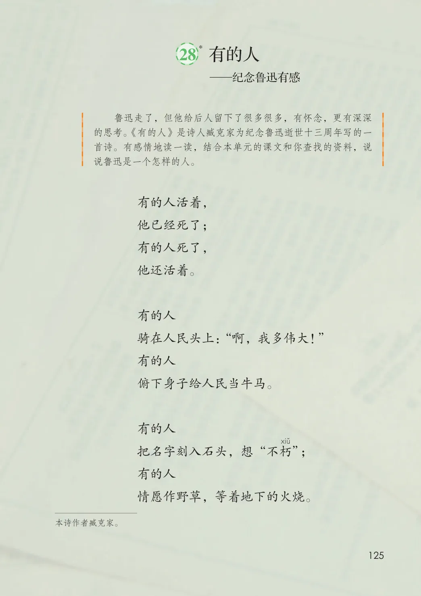
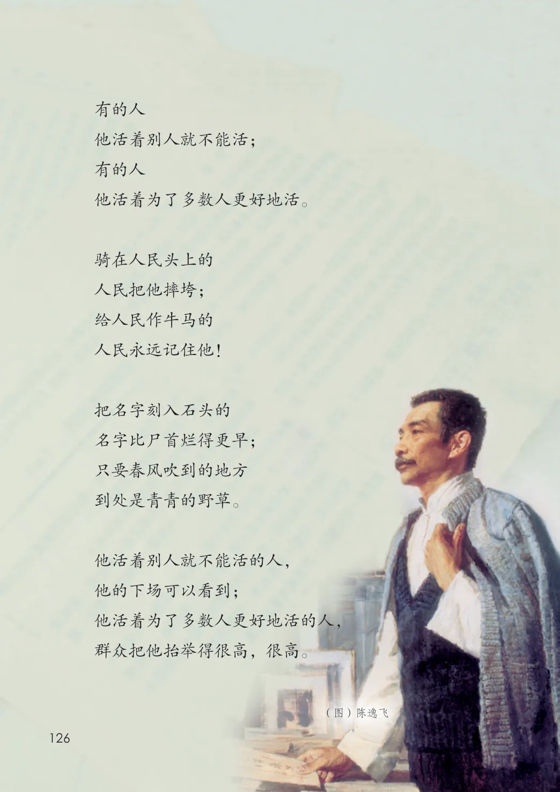

第八单元 · 第 28 课
有的人——纪念鲁迅有感
文字内容 PDF 第 130 页
—纪念鲁迅有感
课后练习
- 鲁迅走了，但他给后人留下了很多很多，有怀念，更有深深的思考。《有的人》是诗人臧克家为纪念鲁迅逝世十三周年写的一首诗。有感情地读一读，结合本单元的课文和你查找的资料，说说鲁迅是一个怎样的人。有的人活着，他已经死了；有的人死了，他还活着。有的人骑在人民头上：“啊，我多伟大！”有的人俯下身子给人民当牛马。有的人把名字刻入石头，想“不朽”；有的人情愿作野草，等着地下的火烧。本诗作者臧克家。
文字内容 PDF 第 131 页
有的人
他活着别人就不能活；
有的人
他活着为了多数人更好地活。
骑在人民头上的
人民把他摔垮；
给人民作牛马的
人民永远记住他！
名字比尸首烂得更早；
到处是青青的野草。
他活着别人就不能活的人，
他的下场可以看到；
他活着为了多数人更好地活的人，
群众把他抬举得很高，很高。
（图）陈逸飞
生字与词语
把
名
字
刻
入
石
头
的
只
要
春
风
吹
到
的
地
方
原版对照
原书页面与全部插图
点击图片可查看大图。

